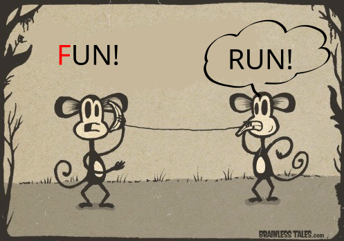
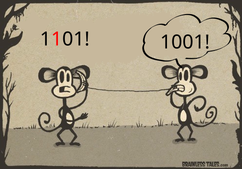
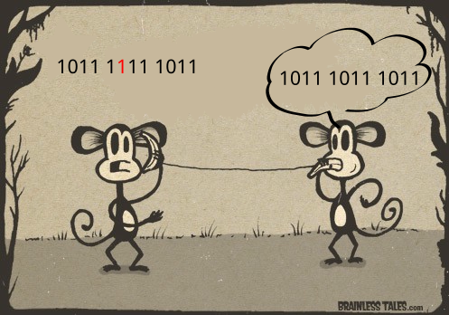
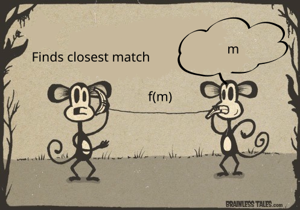
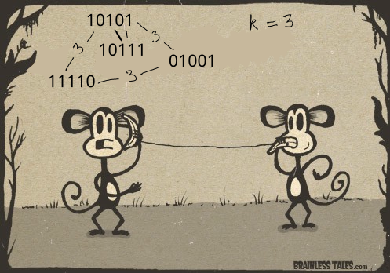
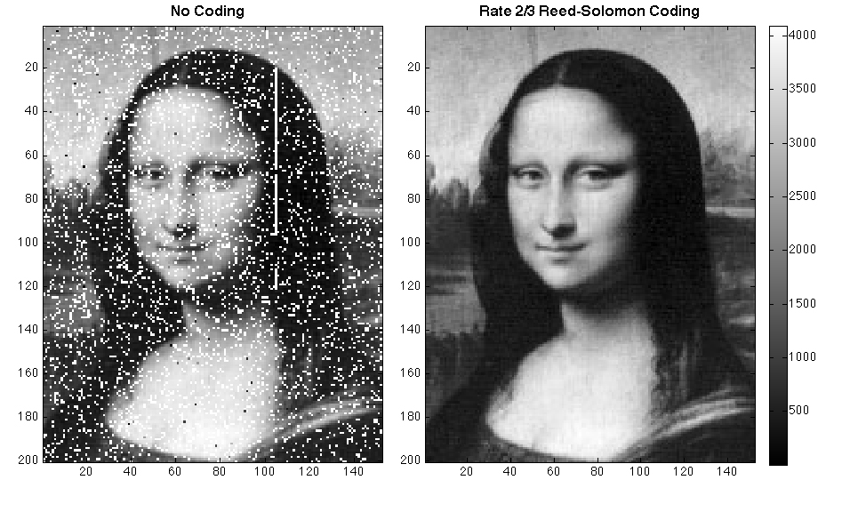

Error correcting codes
How to talk across a noisy room?
Noisy communication channels
Is this working?
Am I muted?
Can you hear me through space?
Can you hear me through the atmosphere?
Errors are inevitable


Correcting errors

Can we do better?
Yes, we can.
Using number theory!
The strategy
We have a set \(M\) of messages (strings of length \(n\)).
We encode each \(m \in M\) to a longer string \(f(m)\).
So that \(f(m_1)\) and \(f(m_2)\) are not too close if \(m_1 \neq m_2\).
What is “too close”?
Given two strings \(n_1\) and \(n_2\), define the Hamming distance \(d(n_1,n_2)\)between them to be the number of places in which \(n_1\) and \(n_2\) differ.
Not too close = Hamming distance at least \(k\).
Using the strategy

Allows \(\lfloor k/2 \rfloor \) errors to be corrected!
Allows \(\lfloor k/2 \rfloor \) errors to be corrected!

How we execute the strategy?
How do we find an \(f\)?
Using finite fields!
What is a field?
A field \(F\) is a set together with operations \(+\) (addition) and \(\times\) (multiplication) satisfying the familiar rules.
- Addition is associative, commutative, has an identity element (\(0\)).
- Multiplication is associative, commutative, has an identity element (\(1\)).
- Distributive law holds: \(a \times (b+c) = a \times b + a \times c\).
- Every non-zero element has a multiplicative inverse.
Examples
- \(\mathbb Q\) is a field (with the usual \(+, \times\)).
- \(\mathbb R\) is a field (with the usual \(+, \times\)).
Finite fields
Take \(\mathbb F_p = \{0,1,\dots, p-1\}\)
with \(+\) and \(\times\) done modulo \(p\).
Theorem: \(\mathbb F_p\) is a field.
Multiplicative inverses in \(\mathbb F_5\).
\begin{align*} \overline{1}^{-1} &= \overline 1 \\ \overline{2}^{-1} &= \overline 3, \quad \overline{3}^{-1} = \overline 2 \\ \overline{4}^{-1} &= \overline 4 \end{align*}Polynomials
For any field \(F\), let \(F[x]\) denote the set of polynomials with variable \(x\) and coefficients in \(F\).
Example: In \(\mathbb F_5[x]\), we have elements like
\begin{align*} \overline 0,\\ \overline 2 \cdot x + \overline 1, \\ \overline 1 \cdot x^2 + \overline 3 \cdot x + \overline 2. \end{align*}We add and multiply polynomials as usual, but remembering to always use the given operations for \(F\).
For example, in \(\mathbb F_5[x]\), we have \[ (\overline 2 x+ \overline 1) \cdot (\overline 1 x+ \overline 3) = \overline 2 x^2 + \overline 2 x + \overline 3. \]
Zeros of polynomials
Most of the usual properties of polynomials continue to hold.
- If \(p(a) = 0\) then \((x-a)\) divides \(p(x)\); that is, \(p(x) = (x-a) q(x)\) for some \(q(x)\).
- As a result, if \(p(x)\) has degree \(n\), then it has at most \(n\) zeros.
- As a result, if \(p_1(x)\) and \(p_2(x)\) are distinct and have degree at most \(n\), then \(p_1(a) = p_2(a)\) for at most \(n\) values of \(a\).
Reed-Solomon codes
Message space: length-3 strings of \(\{0,1,2,3,4\}\).
Encoding \((p_1, p_2, p_3)\)
- Think of \((p_1,p_2,p_3)\) as the polynomial \(p(x) = p_1 x^2 + p_2 x + p_3\) in \(\mathbb F_5[x]\).
- Encode this polynomial into a length-5 string \((p(0),p(1),p(2),p(3),p(4))\).
- Think of \((p_1,p_2,p_3)\) as the polynomial \(p(x) = p_1 x^2 + p_2 x + p_3\) in \(\mathbb F_5[x]\).
- Encode this polynomial into a length-5 string \((p(0),p(1),p(2),p(3),p(4))\).
Example:
\begin{align*} (1,1,1) &\mapsto {\small (0^2+0+1, 1^1+1+1, 2^2+2+1, 3^2+3+1, 4^2+4+1)} \\ &== (1,3,2,3,1). \end{align*}What is the hamming distance?
What is the Hamming distance of the encodings of \(p\) and \(q\)?
At least 3!
Two distinct polynomials of degree at most 2 must differ in at least 3 out of the 5 values of \(x\) in \(\mathbb F_5\).
Recap
Encode: Length-3 string to length-5 string
Gain: Ability to correct any 1-bit errors.
Better than tripling!
Applications
Reed-Solomon codes (and their more sophisticated analogues) are used in many places!

More questions
- Are there other finite fields, besides \(\mathbb F_p\)?
- Can we do better than Reed-Solomon?